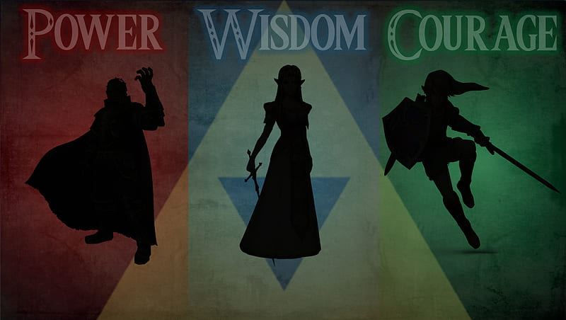

Es un videojuego de acción-aventura de 1998 desarrollado por la filial Nintendo EAD y publicado por Nintendo para la consola Nintendo 64. Fue lanzado en Japón el 21 de noviembre de 1998, mientras que a Norteamérica llegó dos días después, el 23 de noviembre, y en Europa se estrenó el 11 de diciembre de ese mismo año. La historia del juego se enfoca en el joven héroe Link, quien emprende una aventura en el reino de Hyrule para detener a Ganondorf, rey de la tribu Gerudo, antes de que encuentre la Trifuerza, una reliquia sagrada capaz de concederle cualquier deseo a su poseedor. Para ello, debe viajar a través del tiempo y explorar varios templos con el fin de despertar a algunos sabios que tienen el poder para aprisionar de forma definitiva a Ganondorf. Se ha de mencionar que la música juega un papel muy importante en la trama del juego, puesto que el jugador tiene que aprender a tocar varias canciones con una ocarina.

Un Jugador
Desarrollado por Nintendo
Banda Sonora por Kōji Kondō
Acción-Aventura